Automatic Voice Relay System
AVRS
Automatic Voice Relay System
Bob Bruninga, WB4APR
Universal Connectivity-by-callsign Workshop: This workshop was held 18 Sept 2011 at the ARRL/TAPR Digital Communications Conference and WOW! was it an exciting event. AVRS, however, is just part of the overall Ham Radio Initiative for Universal Contact by-callsign Follow other links there.
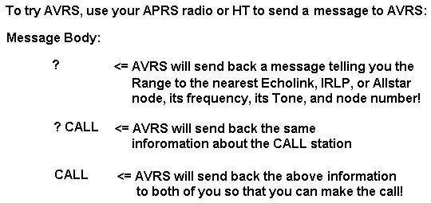
The rest of this now has to be updated. We have been pushing the AVRS and APRStt concepts for over a decade, and now it seems that we are starting to see some momentum. So, give me time to update all below... The stuff below was the state-of-the-hopes before DCC 2011, and now it needs to be updated to where we really are.
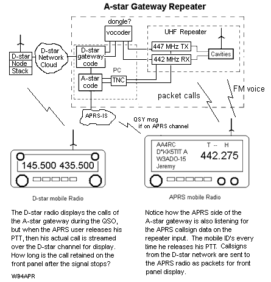 AVRS is the ham radio Universal Voice Contact System equivalent to the Universal Ham Radio Text Messaging initiative. Both of these initiatives attempt to cross connect all ham radio systems so that only a callsign is needed to establish TEXT or VOICE contact. For Voice, we are trying to cross connect all of the VoIP ham radio link Programs (IRLP, ECHOlink, WIRES, D-STAR, Asterix, etc)! . Think of AVRS as Ham Radio's Cellular-by-Callsign system where you use your radio to make a call to a callsign instead of a phone number. .
APRS is the backbone signalling system locating the end CALLSIGN users and the Links needed to set up the call. This is just like D-star, except it works for any analog system such as EchoLink, IRLP, AllStar or Wires. D-star already has end-to-end callsign connectivity, so does HF ALE. Echolink, and IRLP also have it, but they only respond to DTMF requests. APRS can bring this to the HT and mobile APRS operator in a more user friendly form and make it available on a local analog channel! Here are the steps we proposed for making a call (anywhere on the planet) for example using an A-Star (APRS) gatweway on the D-Star system:
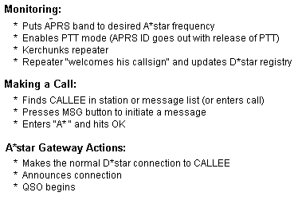 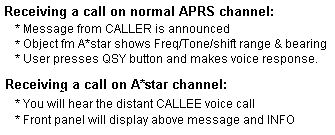
The above boxes show how an A*Star call is made from both the sender and receiver perspective. The A*star QSO can be between any other A*star user or any other D*star user seamlessly. Future versions of the D710, D72 and FTM350 and others can automatically QSY the radio if the Menu option has been selected.
Original AVRS Goals: In the year 2000 or so, we introduced this AVRS concept of marrying APRS and Echolink/IRLP ham radio systems so that end-to-end mobile-to-mobile voice is possible with automatic set-up based only on callsign. . There were many long term objectives to reach this goal.
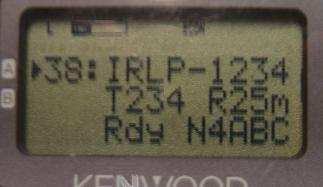 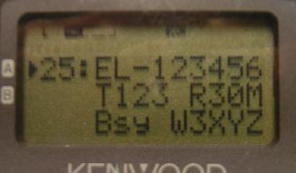 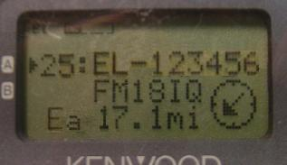
NODE OBJECTS: . As of 2007, we have made substantial progress on the first 5 items above. . Many Echolink, IRLP, D-STAR and WIRES nodes now appear on the air and most importantly on the front panel displays of mobiles and HT's as shown to the right on the D7 HT. These photos need to be taken again, since they are not showing the Frequency of the node which is also very important. The proper formatting of these objects is shown in the Echo-IRLP-Win.txt file.
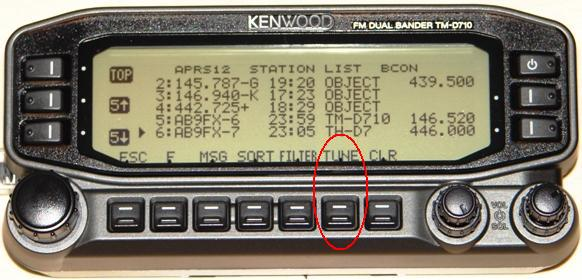
QSY Transceivers: . Also since 2007, we now have many APRS radios (D710, D72, and FTM350) that can TUNE/QSY to a frequency listed on APRS with the push of a single button as shown to the right. Not only can the radio tune to IRLP/Echolink Frequency objects, they can also tune to any other Repeater or operator that has frequency in its position packet. Please see the Local Frequency Object concept that we have been pushing for a few years now. . A few examples are shown on the radio to the right.
AVRS is BORN!!! The Ham Radio Outlet Grand Opening in Atlanta in Dec 2010 was the turning point in this Universal Connectivity initiative. Both APRS and D-Star hams were all in attendance at the store, but I notice that all the D-Star people clusterd on one side of the store, and all the APRS folks clustereed on the other side of the store, as if they had nothing in common! At that point I ran in to some D-Star folks AA4RC, Robin Cutshaw who had designed the DV dongle, making it possible to work on D-Star connectivity outside of a D-Star box and AB0OO, John Gorkos who not onlyu knew APRS, but just about everything else! He jumped at the idea of writing AVRS and I announced it at the time... THen basically heard nothing until now, (Sept 2011) and he has revealed his efforts at DCC. This is the core of the AVRS Ham Radio Cellular-by-call system. Stay Tuned!
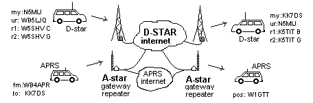
A-STAR REPEATERS: A possible short-cut to more rapidly reach the AVRS goal of universal voice connectivity is to simply build what I call A-STAR gateway nodes. These analog nodes or link stations appear to the APRS user as just an analog repeater that happens to listen for APRS identification of its users. But then it is also connected as a D-star Gateway device on the D-star network as shown on the top of the page and to the right. Since D-star users already have callsign-routing and repeater-routing the only thing needed for an A-star analog repeater is the callsign signalling, and APRS provides that. See the A-star spec
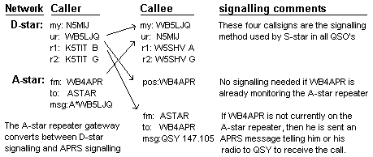
D-star to A-star call: First, the APRS users on the A-star repeater are all fully known because of their APRS beacons. the A-star repeaters know where all 40,000 APRS users are already. Thus, as shown in the lower right corner of this diagram, a mobile A-star user can receive a D-star call from anyone anywhere because the A-star gateway appears on the D-star network with that knowledge. The D-star system provides the end-to-end connectivity and the A-star gateway does the D-to-A conversion back to voice. This knowledge can be extended for incoming calls even if the APRS user is currently elsewhere on another frequency. An APRS message is simply sent to the APRS user signalling him or his radio to QSY to the A-star repeater to answer the call! (all new APRS radios (D710, FTM-350 and D72) can do this now with one button push. In the future, it can be automatic!).
A-star to D-star call: This is as simple as making a D-star call on a D-star radio, except that the A-star user enters the target callsign into an APRS message beginning with "A*". The A-star repeater gateway converts that to the streaming D-star callsign and the D-star network handles the rest. If the callee happens to be another APRS user, then an advantage of this APRS signalling is that he does not even need to be on the A-star frequency but can receive the APRS message and he or his radio can instantly QSY to receive the call. Of course, once the A-star repeater makes the A-star user appear identical to a D-star user, then everyone can talk to anyone in the same manner. Everyone appears on the D-star network as a D-star user.
APRS-PTT-Mode: The key to this process is the APRS user operating in PTT mode when he is on the A-star repeater channel. THis was the original APRS concept so that background APRS signalling could be done transparently on the input channel of any Voice repeater. The APRS information is transmitted in a 0.3 second burst at the end of a voice transmission when the PTT is dropped. The A-star repeater has a TNC on its input listening for this data. That is how the A-STAR repeater knows that the local mobile is currently there. The D-star callsigns are transmitted as a normal APRS packet back to the APRS radio for display on the front panel.
The remainder of this page continues with the original AVRS concept.
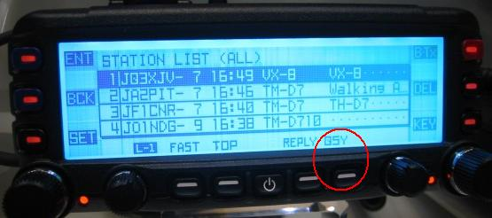 AVRS will allow any APRS mobile to establish a voice link to any other APRS station anywhere on the planet by simply sending an APRS message with the other station's callsign. This is accomplished by a single AVRS engine via internet links between the global APRS, IRLP, Echolink, D-Star and WIRES systems. This engine will operate stand-alone similar to how the WU2Z Email engine now handles APRS Email. But instead of Emails, the AVRS engine handles the logistics look-up and messaging needed to initiate a Voice call between two APRS voice operators with no other knowledge than the callsign of the CALLEE.
Global Autopatch: Of course it is easy to extend this using VOIP interfaces to a global APRS Autopatch system. Instead of listing a callsign in the AVRS message, the sender enters a PHONE NUMBER. The AVRS engine looks at its list of local auto-patch nodes that have the matching phone number area code and sets up the call.
The AVRS Engine:
As seen below, the AVRS engine interacts with the APRS-Internet system and monitors the status of all IRLP, ECHOlink, D-STAR and WIRES nodes. Being fully aware of everything needed for end users to find each other, calls, locations, frequencies, PL's and status, the AVRS engine's job is to pass the needed information and messages to the end users to help establish the call:
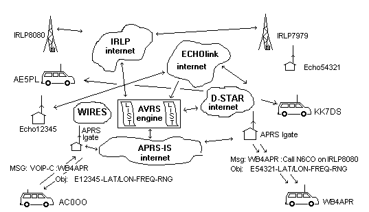
SCENARIO FROM MOBILE TO ANOTHER MOBILE or EchoLink or IRLP NODE:
MOBILE PLACING A CALL: To place a call, a mobile simply sends a message
to AVRS and the first word of the message is the callsign of the
desired contact (the CALLEE). He needs no other knowldege.
AVRS will ack his message via the nearest IGate and will respond with an object
showing him his nearest ECHOlink, IRLP, D-STAR or WIRES node(as appropriate),
its frequency and PL.
And then a message giving the QSY frequency or other status of the call.
RECEIVING A CALL: If the CALLEE is an APRS station on the air
(has been heard recently on APRS),
The CALLEE will receive the message from AVRS saying QSY FFF.FFF Tnnn E123456
for CALLER using #1234. In this case, CALLER is the caller's callsign,
Tnnn is the CTCSS tone, E123456 is the Echolink or IRLP node and #1234 is the
DTMF access code. If the CALLEE is on D-STAR, he will simply hear the voice
call on his local D-STAR channel.
All of this information was determined by the AVRS engine looking up the position
of the CALLEE station and the nearest not-busy IRLP or ECHOlink node.
. If the CALLEE is an EchoLink or IRLP station
then it could be automatically connected to the CALLER's
nearby EchoLink, IRLP, D-STAR orWIRES repeater if IDLE.
If the CALLEE is an APRS station but has not been heard recently, AVRS still sends him an
APRS message saying "Call from XXXXX on E123456 at 1237z.
This is so that if he doesnt get this message until a while later
the callee can initiate the ECHOlink or IRLP call back to node #nnnnn.
FUNCTIONS OF THE AVRS ENGINE: The AVRS engine can be anywhere and is simply
software running on a reliable internet system. It monitors not only all traffic on
the APRS-IS, but has access to active node status of both the IRLP and ECHOlink systems
as well as the list of currently available D-Star users.
As such, it is all knowing and all seeing. The following is a description of this process.
For simplicity the term "AVRS node" will be used interchangeably to refer to "IRLP,
ECHOlink, D-Star, WIRES or other AVRS nodes". Here are the functions of the AVRS-Engine.
IF CALLEE IS APRS BUT NOT ACTIVE, THEN:
IF CALLEE IS APRS AND ACTIVE, THEN:
IMPLEMENTING AVRS:
AVRS can be implemented by a single software engineer willing to invest the time
in the project.
Small changes to the IRLP, ECHOlink, D-Star and WIRES systems might facilitate operations,
but most everything
needed for this global AVRS ham radio QSO system is in place.
Here are several things that can speed the implementation:
INITIATING A CALL:
Caller simply sends a message to AVRS using one of these formats:
MESSAGES to CALLEE: the following messages are delivered to the Callee, depending on whether
he has been heard recently or not. They are shown in the format that would be flashed on the
APRS Radio's front panel for direct viewing by the driver:
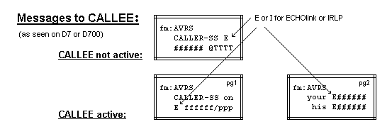
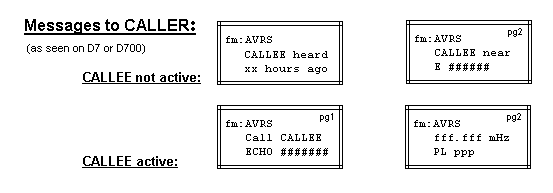
This would take compatible code between the EchoLink, IRLP and AVRS systems...
In this scenario, the CALLER is an on-line EchoLink user and he attempts to connect
to a callsign using his EchoLink client. If the CALLEE is another EchoLink station
the connection is made (but an APRS message is generated via APRS to the CALLEE saying
"Station XYZ is calling you on EchoLink"...) This is in case the actual CALLEE is
mobile with APRS but has an RF link from his car to his Home EchoLink station. This
is just a reminbder for him to QSY and talk voice via that system.
If the CALLEE is only on APRS, then the CALLEE side of SCENARIO #1 is followed on
his side of the call. That is, he gets an object and a message informing him of
where the nearest IRLP or EchoLink node is, what its frequency and PL are and
who is calling him... He can QSY and take the call or not... etc...
APRS-ON-LINE-USER CALLING AN APRS MOBILE:
In this scenario the on-line
APRS operator is running both an APRS client and can see the EchoLink and IRLP
node status on-line so that he can see where the CALLEE mobile is located and since
all IRLP and EchoLink nodes are now injecting their STATUS objects into the APRS-IS,
(click for IRLP)
(click for ECHO)
the on-line user can zoom in on the mobile and can see what type of AVRS node is
nearby. Displaying the PHG circle can confirm the reliability of the link.
TO call the mobile, the operator sends an APRS message to the mobile
operator saying "I am calling you on XXXX AVRS node on FFF.FFF MHz with
PL of PPP. Pse QSY, tnx". If the mobile gets the message and QSY's, then the
call is a success.
Bottom line is that we have RF local connectivity via APRS, IRLP, EchoLink, D-Star, and WIRES
and we have Global connectivity via all these systems (and more). All AVRS is
doing is focusing our efforts to develop a simple global connectivity between
end users using HAM radio while knowning only callsigns. Its only a little software....
de WB4APR, Bob
The remainder of this page are the older ideas on AVRS that have been around since DCC in 2000
HISTORY: The AVRS concept of a Voice interface for APRS was first publshed at the DCC
2000 in Orlando, (see old paper). It went through some name
changes to "IPRS", and then VIPRS, but now we are back to AVRS
as the generic term for using APRS to augment the end-user display of data about the voice systems
and to facilitate end-to-end user voice connections using the knowledge of APRS about where everyone is!
You can see my old IPRS ideas around the July 2002 time frame.
Eventually, with AVRS, we should be able to make a call to any HAM radio operator on the planet by
simply entering his call. But to get to that point, we need to evolve through three
areas:
MOBILE DATA DISPLAY:
The following two images suggest how IRLP or ECHOlink node status should appear from
their APRS object reports on 144.39 (USA) everytime the NODE changes state. This packet
alerts APRS mobiles in the area on the front panel of their radios the status of the node.
These examples used my original concept that all Echolink and
IRLP nodes should have an 8 character geographical name to fit nicely in APRS:
Simply clicking on the node on the radio display will yield additional information
about the link, without even having to QSY to tune it in! That is just Phase 1.
The additional things we can do with APRS for these voice systems are:
Here is the old original AVRS Specification. I need
to update it to the new centralized AVRS concept.
INTERIM PLAN: The above screens assume that we can convince the entire
IRLP and ECHOlink community to define 8 character ALPHABETIC names to all nodes. This
will take a long time. In the interim, we just want to see the existing nodes on our
APRS displays while mobile. In this case, we will use the node NUMBERS as shown below:
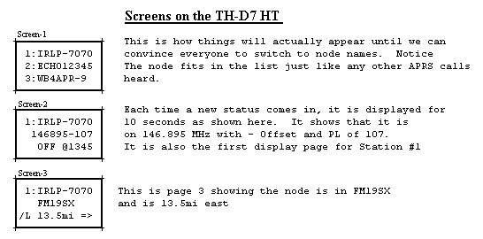
Future AVRS Concepts:
The remainder of this page continues with the original concepts about where we should be going
with AVRS in the future.. The new plan (above) of the single AVRS engine to coordinate the
connectivity for users falls under the category I called "ASSISTED" mode below. We can do
STATUS and MANUAL modes now. ASSISTED can be done easily, and FULL-AUTO can be implemented
by someone smart enough to write a PIC processor to implement it in their mobile or by
Kenwood with a new radio.
AVRS is attempting to define how we can use our HAM radio mobiles and HT's like CELL-Phones.
Sinec 10,000 or so of us have the Kenwoods, the Human/Data Interface of the D7 HT and D700 Mobile
APRS rigs and their (Tiny-Web-Pages) are a good target design objective. Even in 2002, we were
predicting growth rates of over hundreds of Voice nodes per month to exceed 999 in the IRLP system
alone by Feb 2003
(See PLOT!).
Or see the Active-Node-List.
AVRS is only a human interface adjunct to existing Voice-Link systems and
does not obsolete existing users or control systems.
(See the plan back in DEC 2001)
In the context of "AVRS", of course, it would be nice to have a non-conflicting numbering system to work across
all systems. To date we could use these as the APRS distinction:
For additional closeups of the front panel showing the types of data that can be displayed on
these "tiny-web-pages" go to my
TINY-WEB-PAGE satellite tracking page
that shows how they are used to dessiminate satellite tracking info LIVE to mobile users.
Now imagine that these lists can also contain IRLP data, and the built-in end-to-end
APRS data exchange can be used to automatically establish end-to-end voice links.
AVRS SIGNALLING ADVANTAGE: Without AVRS, mobiles will find it impossible to fathom all the
potential across the multiple VOIP systems and their unique numbering systems.
Fixed or internet-available NODE-LISTS will simply not work. Such lists are instantly
obsolete the minute they are downloaded. The only way to make this work is to have
them self-identify on APRS to all mobiles in view. This is the new AVRS concept.
Using this LIVE IRLP and ECHOlink node status into APRS then the AVRS engine's FUNCTION is
to be the central clearing house for finding the status and location of the other end of
a desired AVRS QSO. In otherwords, we are not trying to get into the other systems
and muck with their designs. but AVRS will offer a single clearing house for finding
the nearest available system for making cross-system calls.. between end users.
No hardware is needed to add this tremendous capability to any VOICE-IP system, since they
can simply feed their APRS objects into the APRS internet system. Then the local IGate
puts the local IRLP and ECHOlink nodes into its pass-to-RF list.
Note: Back in 2002 I was pushing IRLP and ECHOlink authors to assign 8-character
geographic node names to all nodes that support more than one end user (Repeaters). This was
to make this data fit the existing callsign fields in all APRS data applications.
So I went ahead and edited up a list. (Download here)
Also, for more details, see the OLD original DRAFT AVRS PAPER HERE .
And I was sure that sooner or later they were going to need a new numbering plan:
Besides the signalling defined in the paper above, here were some other concepts that
should be applied to the use of these systems in your area to the end user mobile:
This javAPRS page below displays the 2002 APRS-OVERLAY file of IRLP nodes provided by
James Ewen. Ignore the red lines, they connect repeaters with identical frequencies(LABELS)
and are an artifact of APRS vehicle tracking trying to "track moving objects"...
But no reason why (with a little software) they couldnt show LIVE which repeaters are
linked...
Click for 2002 World Map
Click here to download the 2002 IRLP.POS file
Here are some initial ideas that can be implemented by APRS users to begin recognizing
IPRS nodes and concepts.
These can be implemented now on APRS independent of progress on the IPRS side...
HOW TO PUT YOUR IRLP or ECHOlink NODE ON THE APRS MAP:
Simply put your IRLP node as an APRS OBJECT into one of the LText buffers of your local APRS
digipeater and set its LTPath to direct and set its rate to 10 minutes. Bingo, every
mobile in the area will see it on the front panel of his radio! Here are the formats of
the TNC commands for use at the DIGI site:
In the above the IRLP##### will be the name of the object and the
LAT/LONG must be the exact number of digits, but you can replace
the hundredths of minutes with TWO spaces which will give a position ambiguity of
one mile if you want to protect the exact location of the repeater. The CCCCCC is the
callsign of the repeater, ##### is the IRLP node number, and then the frequency and
tone of the repeater
IPRS SHARED VOICE/DATA CONCEPTS!
The following concept was the original concept for having each VOIP site send
its own data via its own TNC and radio. This was probably impractical becauwse
it required more hardware at the site. But under that situation, it would be
possible to send both
voice and DATA on the same channel so that all of AVRS can be done entirely on
BAND A of the Kenwood D7 and D700 leaving the other band free for all other
mobile ham radio applications. Also, with a combined voice/data channel/ single
channel radios can be used by other experimenters to build compatible systems.
Here is how you could setup your Kenwood:
WOW. We can really do some neat things here!
Remember, we are not trying to re-invent APRS, and
we are not trying to muckup existing IRLP or ECHOlink operating procedures. We are
simply exploring ways to overlay ideas to allow a marriage of
mobile data exchange capabilities built into the Kenwoods, HAMHUDS. MIM's
(and anything else someone wants to cobble up) to facilite long distance
voice/data communications between end users via the internet...
de WB4APR@amsat.org, Bob
You are visitor:
 User Terminals: .
All messaging for the AVRS system can be initiated and received by any APRS system, but
most importantly, they can be accomplished from the keypad and display of the variety
of APRS radios (D7, D72, D710, FTM-350, VX8R,-8DR, -8GR).
Thus giving true global voice capability to dynamic in-the-field users:
User Terminals: .
All messaging for the AVRS system can be initiated and received by any APRS system, but
most importantly, they can be accomplished from the keypad and display of the variety
of APRS radios (D7, D72, D710, FTM-350, VX8R,-8DR, -8GR).
Thus giving true global voice capability to dynamic in-the-field users:
SCENARIO #2, ANY ECHOLINK USER ON LINE TO ANY APRS MOBILE:
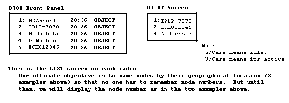
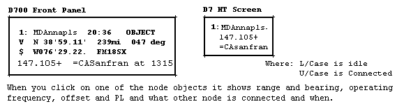
Click to see IRLP APRS status
Click to see ECHOlink APRS status (not as many)
zooms up/down (you may also use PGup/dn)
List stations, Show Status or Messages to Java console
Centers or Zooms map on clicked location
scrolls map
since 4 Dec 2001.
It was 1330 on 30 July 2002 when I changed the name to IPRS.
.
{kind=link}